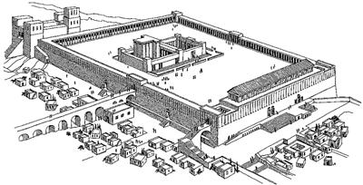
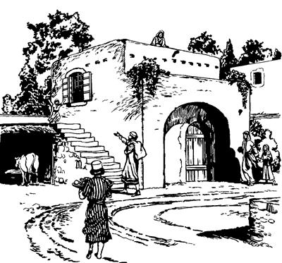

Yesusti tam amik uro yabilulne sembe ambarelamsiogha
13:1-37
Allahri Mem Ae kwerekanepne sembe Yesusti ambatsiogha
(Matius 24:1-14; Lukas 21:5-19)
13
1 Yesusap eldi yubu ka'ero neleptopnangap Allahri Mem Ae nubunge laplobi agha palamekti, eldi yubu ka'ero neleptopne nhondi, “Nai, yubu amohiropne, Allahri Mem Ae aram ane kembamen! Nubu kirik walingeag agha Allahri Mem Ae tipto sorop ae maikno ane babe, imag soroba babe kemerop sirik,” seog.2 Wene seogpa Yesusti, “Nubu ae walinge maiknoa soroba ane tiboghamen. Amik sum ni ae aneap, imag soroba aneap nimiri ni kwerekto yamolobikpa, kirik pai sobi ubu walerop kirik enekoag agha nhon babe nen sorobag sekamlul kom,” seog.

3 Wene seogti, Yesusap eldi yubu ka'ero neleptopnangap Zaitun yimaga yingkiekti, Yesus Allahri Mem Ae nubunge whingag sip tibogto pukamog. Pukamogpa, eldi yubu ka'ero neleptopnang tombare Petrusap, Yakobusap, Yohanesap, Andreasapti, “Yesusap mo yubu lepsebe,” aro Yesusag yaek. 4 Yaekti mololamekti, “Nai, andi usa leplamne neneko sembe olog tibin nebatsululam. Usa andi, ‘Nimiri ni kwerekto yamolobukang,’ aro leplamne nene etsum agha uro yabilul? Kekneba huropne agha lag taleba, ‘Wene uro yabinep,’ sembaukap?” aro eldi yubu ka'ero neleptopnang tombare abenekori Yesusag haibaek.
5-6 Wene aro haibaekpa, Yesusti sinag samoro ambarelamsiogti, “Nimiri a'unag, ‘Orolenange ambatsikag,’ aro haing whi uro yae wamlulom! Allahri samenag salag lero palilamogti, ‘Nimi nhon “Nimi taluro saelbamsilul,” aro wepto pognun,’ seogne sunsunum uro, na Yesus wepto pogneo. Na Yesus wepto pogneonge sembe lebog aghana, amik sum nimi maiknori orolenange leroa yalamikti, a'ero-a'ero lelamikti, ‘Allahri nanagha “Saelbamsululam,” aro wepto pogneoba yan,’ sukang. Sindi orolenange lelamikne sembe nimi maiknori sik sembaukang aghana, a'undi sik sembaheng kom. 7 A'undi ka'elapmunba, nimiri mog so'o aneag babe, weag urop mog so'oag babe mal talamikne sembe lelamikpa, ka'elapmun tanena, wanaag samsamoro log sembaheng kom. Mal talamikne ane sik uro yabilul aghana, Allahri tam karepto ikinne komopto pimnep sum anam elem uro yabinep kom. 8 Yubu sia leropne as nhonap nhonap aisa neneptangto mal talamikpa, nubu mog so'o nhonap mog so'o nhonap nimi teng-tengne mal talamukang. Mal talamikpa, mog so'o tala-tala sa'uma pot-porolamleba, kwaneng yo maikno walelamlul. Uro yabilul aghana, ‘Allahri tam karepto ikinne pairop sum komobanual,’ sembaheng kom. Allahri tam kareptop sum lag tanepne sembe sunumnana undo. Me anam mangaptan komag ilindi me mangaro anebag og alnilamsildi, og nubu tangtang og maikno uro seklero mangal tolamla tanena, ‘Me manganuan,’ sembanep. Ane saog uro, nari ambatsinne sunsunum uro nimi seklenne nubu tangtang uro yabilenge abeneko pere a'undi ‘Wene Allahri tam karebalul to,’ aro alniro seneragnep. 9 Aghana sumeneko anam lag tan komag a'un haing whi uro wamlulom! A'undi Nanag neleplamnelomne sembe nimiri a'un salero, ‘Luknubahukap,’ aro Yahudi nimi sembe tam kareptopnangag a'un pabalamsiikti, Yahudi nimi poloro winiro yubu lerop aeag olamsukang. A'un salelamsiikti, ‘A'un Yesusag sik sembaheng kom,’ aro nimi mog so'o saelba uhiropnang gubernurap yubu sia leropnangap sikin whingag pabalamsukang. Sin whingag a'undi na Yesus sembe ‘Undo-undo wamori, ulamoba, ibobo,’ aro lag phoro ambarelamsululom. 10 Allahri tam komopto karebalul sumeneko anam uro yabin komag, a'undi Allah yubu walinge nene ambarelamsululom. Ambarelamsimunba, yubu walinge nene tipto nimi mog so'oag tala-tala wamang nimiag ambatsiik taneogna, tam wali uro komopto karebanep sumeneko uro yabinep. 11 Yubu walinge ambarelamsimunba, nimiri a'un haing sae kaupto tam kemero kareptobag pabuhukang. Tam kemero kareptop nimi whingag pabihik tanena, ‘Sa'a senun,’ aro log sembaheng kom. Sin whingag wapmunag abeneko pere Allah Eldamne Yame Walingeri a'unag ‘Undo-undo leplulom,’ aro el nembahilul. Allah Yame Walingeri a'unag amolamsilenge a'un mori senenneag kom aghana, Allahri senenne sunsunum uro amolamsilul. Ane sembe log semban koma Allah Yame Walingeri a'unag amolamsilenge sunsunum uro lelamlulom. 12-13 Na sembe ambarelamsimunba, tipto ambarelamsiikne abeneko pere, nimiri karongdi, ilipsaeap eldoapti ‘Nangkae' semban koma ‘Yesusag neleplamlaba, ya'ag oplulom,’ aro pan khebahileba, nimiri opsukang. Iliri babe elme sembe ‘Name,’ semban koma nimiri saeag nenero, ‘Yesusag neleplamlaba, salero oplulom,’ aro pan khebalul. Nimiri sikini sikinin ‘Ya'ag opsukang,’ aro pan khebahukang. A'un nanap ma'aptangto neleplamnelomne sembe nimi niri a'un sembe karong sembahukang. Karong sembahukang aghana, nimi etneri wana khapto wamleri nanag, ‘Sikne’ aro seneraglamle tanena, Nuni Allahri nimi eneko taluro wali nembalul,” aro Yesusti eldi yubu ka'ero neleptopnang tombare abenekoag ambatsiog.
Yahudi nimi amik seklebaukangne sembe Yesusti ambatsiogha
(Matius 24:15-28; Lukas 21:20-24)
14 Wene seogti, Yesusti nen ambarelamsiogti, “Ik nhon sum malia nhon Allahri ‘Song mali,’ senenne Allahri Mem Ae lomag wa'ina sekamleri, Allahri Mem Ae aneko mali nembalul. Mali nembaleba, Allahri Eldi Mem Ae sembe ‘Karong' sembaleri, laplobi agha pileba, nimiri babe karongdi laplobi agha pukang,” aro Yesusti ambatsiog.
(A'undi mome nene kemelamlom nimiri wali uro seneraglapmun tanena, Yesusti “Malia” seogne nene “Tam huropne sembe lebog,” aro wana hekahilul).
Yesusti eldi yubu ka'ero neleptopnangag tipto ambarelamsiogti, “Malia aneko Allahri Mem Aeag wa'ina sekamle sumeneko nimi mog so'o Yudea wamik nimiri, ‘Nu ya'ag opsikag,’ aro merero yimag pinep. 15 Sumeneko nimi eldi ae imaghag tai waelbamle nimi elem uro kulukaleri, ae lomag wamlea ‘Tomnun,’ aro ae lomag wa'in koma elem-elem merero yimag pilul.

16 Nimi aweag wamle nimi eldi ag nongag enektoba kwiripto piplea samoro tol pin koma merero yimag pulul.17 Undo uro yabalamle abene sin memon wamsile kelaboap, me maum tiniltolamik kelaboap, sin sembe ikin sirikti, seklenne seklebaukang.18-19 Ko'o neneag wamik nimi maiknoro seklebaukang. Undo uro yabalamleba, seklebaukangnena, Allahri samenag so'o sumbaog sumag agha nimi seklelameka kekman, wene babe seklelamang aghana, undo uro yabileba, ikin uro seklebaukangne sunsunum uro kom. Undo uro yabileba, seklelamikpa, amik wamukang nimi babe seklebanep aghana, undo saog uro seklebaukang kom. Ot ko'o neneag wamik nimi agha undo seklebaukang. Ni undo uro yabalamlulne nene mag telamle liag uro yabile tanena, yimag panne ekauk sirik, ane sembe Allahag mololapmundi, ‘Nun seklebabeagti, mag telamle liag uro yabalamlul kom,’ aro molona mololamlulom.20 Ikin seklebaukang ko'o aneko Allahri peram nembaho komba, nimi ni tebaheng. Aghana anam uro yabin komag, Allahri o'ona senehiro, ‘Na mabo taukang,’ aro wepsiog nimi sembe yareag sembahiogti, ‘Ko'o ane peram nembanun,’ aro karebaogti, peram nembalul.21 Ko'o anekoag nimiri a'unag yubu ambarelamsisengdi, ‘Kembahut! Allahri wepto “Taluro saelbamsululam” aro poghogne Kristus yaldi, ane wamla,’ sehengba, nimi orangeri, ‘Ano wamla,’ seheng tanena, a'undi sik sembaheng kom. Sinag nelebahin koma yimag merero pululom.22 Nimi maiknori lero yalamikti, nenneri, ‘Na Allahri “Saelbamsululam” aro wepto pogneoba, na Kristus yan,’ aro orolena ambarelamsukang. Nenneri, ‘Na Allah yubu silimu tipto lelamna,’ aro orolena ambarelamsukang. Orolena ambarelamsiikti, nimiri uanep komne ulamikti, ‘Yaghe! Imagneri mikipne pere agha mane agha ual,’ senen kekneba ulamikpa, orolena lelamikne nimi maikno sirikti sik sembaukang. Nimi maikno sirikti sik sembaukang aghana, Allahri ‘Namabo taukang,’ aro wepsirop nimi sembe, ‘Orolena sik sembaukang kom,’ aro wana hekahileba, orolena lelamikne sembe sik sembaukang kom.23 Nari wene a'unag ambatsinne nene anam uro yabin komag ni uro yabinepne sembe ambatsin. Ane sembe haing whi uro wamlulom,” aro Yesusti eldi yubu ka'ero neleptopnang tombare abenekoag ambatsiog.
Yahudi nimiri ae undo wamogpa, ae imag alibag tektek papto wamnep. (Mrk. 13:15)
Yesus eldamne nen so'oag yalulne sembe ambatsiogha
(Matius 24:29-35; Lukas 21:25-32)
24 Wene aro ambatsiogti, Yesusti nen tipto ambarelamsiogti, “Ikin seklelamik ko'o eneko uro yabileba, amik nen uro yabilulnena, Allah yubu samenag mome toro pibogne sunsunum uro uro yabilul. Samenag Allah yubu silimu tiptopne nhondi amik uro yabilulne sembe mome toro palilamogti,
‘Heng babe tingkale komba, wal babe tingkalul kom.
25 Imberea babe lulupna agha imag agha tinilamikpa,
imang wareroba imag wamlange babe ni lolog alul,’
aro mome toro pibog.
26 Undo uro yabile tanena, na imag agha nimi mog so'oag nimi tahinge toa nusam toman nen samoro yanun. Yalamne sumeneko Allah Imagne ponekori mikip phelektopne pere agha imang warero lag taneba, nimi niri tiboganukang. 27 Imang warero mikipneag agha yaneri, nari Allah arukna imagnang malaikat poglamsineri, “Allahri ‘Na mabo taukang,’ aro wepsirop nimi mog so'o im tiptobag so'o tiptobag wamang nimi ni poloro wimbahilulom,” aro pogsunun. 28-29 Nari a'unag ‘Undo-undo uro yabilul,’ aro ambatsinne sunsunum uro uro yabalamleba, kemelapmundi el tahilul. Ni ane kembamundi seneraglapmundi, ‘Yesusti nunag, “Nen amik uro yabilul,” aro ambatsiogne peram tanual,’ aro el tahilul. Kekneba kemelamlulomne nene sembe, sunumna nhon kal sembe ambatsinun. Nu nimi taneri kal ara kemelamapba, kon eren ua ulamlari, mog towalengelamla tanena, ‘Ebare li tanual,’ senelamap. Ane saog uro, nari a'unag ‘Undo-undo uro yabilul,’ aro ambatsinne sunsunum uro uro yabalamle tanena, ‘Nen amik uro yabinepne peram tanual,’ senelamlulom. 30 Sik uro ambarelamsin. Nimi wene wamang nimib anam teban komag ni ambatsinne nene uro yabilul. 31 Imap so'oap orog talul aghana, nari yubu leropne orog talul kom. Ya'ag wamlul,” seog.
“Na yanun sumenekona, a'un ekon uro wapmunag lo'om aro yanun,” aro Yesusti ambatsiogha
(Matius 24:36-44)
32 Wene seogti, nen tipto ambarelamsiogti, “Ni ‘Undo-undo uro yabilul,’ aro ambatsinne nenena, nimi nhondi babe, ‘Etsum uro yabilul,’ aro el wamla kom. Allah arukna imagnang malaikat babe, Allah Elme babe ekon. Ot Nuni Allah Eldamneog el wamla. 33 A'un babe ‘Etsum uro yabilul,’ aro ekon uro wamlom. Ane sembe tibogto weapmundi, haing whi uro wamlulom. 34 ‘Tibogto weamlulom,’ sennena, sunumna nhon ambatsineba ka'eamlulom. Ae ngainge nhon ‘Weag punun,’ aro ulamla tanena, eldi ae lomag wamlange eldi aruknari saeag piplari, ‘Yae wamlulom,’ aro arukahil. Aruklamsildi, elme arukna nhonag, ‘Awe nene tolamlulam,’ seldi, nen nhonag, ‘Awe nene saelbamlulam,’ aro ambatsil. ‘A'ero-a'ero saelbamlulom,’ aro ambatsildi, ina siramag, ‘Yae wamlulam,’ sel nimi enekoag, ‘Wali uro yae wamlulam. Na pineri, samoro yanunne sembe haing whi uro tibogamlulam,’ sel. Wene aro arukahildi pil. Ane saog uro na anam pin komag a'unag, ‘Weapmundi, haing whi uro tibogamlulom,’ aro nari ambatsin. 35 Ae ngainge poneko pina ‘Etsum samoro aeag yalul,’ aro eldi arukna taneko ekon. Ae ngainge poneko sinag yalul to, tomnusam yalul to, kweleknag yalul to, heng lopwalengeleag yalul to, sin ekon. Ae ngaingeri arukna ae yae ua uropnang taneko ekon urop saog uro, na nimi so'oag nimi tahinge etsum samoro yanunne sembe a'un babe ekon uro wapmunba, yanun. Ane sembe haing whi uro tibogamlulom. 36 Ae ngainge poneko lo'om aro yalamleba, el arukna taneko malamikpa, ipsile tanena karong sembahilul. Ane saog uro na lo'om aro samoro yalamneba, a'un malapmunagti, haing whi uro tibogamlulom. 37 Nari a'unag lelamnange nene nimi niag wenero ambarelamsin. Haing whi uro tibogamlulom,” seog.